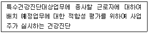
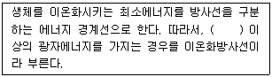
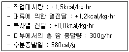
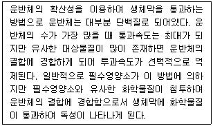

산업위생관리기사 (2017-05-07 기출문제)
1과목: 산업위생학개론
1. 고용노동부장관은 직업병의 발생원인을 찾아내거나 직업병의 예방을 위하여 필요하다고 인정할 때는 근로자의 질병과 화학물질 등 유해요인과의 상관관계에 관한 어떤 조사를 실시할 수 있는가?
- 역학조사
- 안전보건진단
- 작업환경측정
- 특수건강진단
(정답률: 62%)

2. NIOSH의 들기 작업에 대한 평가방법은 여러 작업요인에 근거하여 가장 안전하게 취급할 수 있는 권고기준(Recommended Weight Limit, RWL)을 계산한다. RWL의 계산과정에서 각각의 변수들에 대한 설명으로 틀린 것은?
- 중량물 상수(Load Constant)는 변하지 않는 상수값으로 항상 23kg을 기준으로 한다.
- 운반 거리값(Distance Multiplier)은 최초의 위치에서 최종 운반위치까지의 수직이동거리(cm)를 의미한다.
- 허리 비틀림 각도(Asymmetric Multiplier)는 물건을 들어 올릴 때 허리의 비틀림 각도(Asymmetric Multiplier)를 측정하여 1-0.32×A에 대입한다.
- 수평 위치값(Horizontal Multiplier)은 몸의 수직선상의 중심에서 물체를 잡는 손의 중앙까지의 수평거리(H, cm)를 측정하여 25/H로 구한다.
(정답률: 62%)
3. 우리나라 산업위생역사에서 중요한 원진레이온 공장에서의 집단적인 직업병 유발물질은 무엇인가?
- 수은
- 디클로로메탄
- 벤젠(Benzene)
- 이황화탄소(CS2)
(정답률: 87%)
4. 피로의 판정을 위한 평가(검사) 항목(종류)과 가장 거리가 먼 것은?
- 혈액
- 감각기능
- 위장기능
- 작업성적
(정답률: 51%)
5. 산업위생관리에서 중점을 두어야 하는 구체적인 과제로 적합하지 않는 것은?
- 기계·기구의 방호장치 점검 및 적절한 개선
- 작업근로자의 작업자세와 육체적 부담의 인간공학적 평가
- 기존 및 신규화학물질의 유해성 평가 및 사용대책의 수립
- 고령근로자 및 여성근로자의 작업조건과 정신적 조건의 평가
(정답률: 66%)
6. 근골격계질환 작업위험요인의 인간공학적 평가방법이 아닌 것은?
- OWAS
- RULA
- REBA
- ICER
(정답률: 71%)
7. 산업재해에 따른 보상에 있어 보험급여에 해당하지 않는 것은?
- 유족급여
- 직업재활급여
- 대체인력훈련비
- 상병(傷病)보상연금
(정답률: 82%)
8. 직업성 질환 중 직업상의 업무에 의하여 1차적으로 발생하는 질환을 무엇이라 하는가?
- 합병증
- 원발성 질환
- 일반질환
- 속발성 질환
(정답률: 87%)
9. 마이스터(D.Meister)가 정의한 내용으로 시스템으로부터 요구된 작업결과(Performance)와의 차이(Deviation)는 무엇을 의미하는가?
- 무의식 행동
- 인간실수
- 주변적 동작
- 지름길 반응
(정답률: 81%)
10. 산업안전보건법상 다음 설명에 해당하는 건강진단의 종류는?

- 일반건강진단
- 수시건강진단
- 임시건강진단
- 배치전건강진단
(정답률: 89%)
11. 도수율(Frequency Rate of Injury)이 10인 사업장에서 작업자가 평생 동안 작업할 경우 발생할 수 있는 재해의 건수는? (단, 평생의 총근로시간수는 120000 시간으로 한다.)
- 0.8 건
- 1.2 건
- 2.4 건
- 12 건
(정답률: 76%)
12. 어느 사업장에서 톨루엔(C6H5CH3)의 농도가 0℃일 때 100ppm 이었다. 기압의 변화 없이 기온이 25℃로 올라갈 때 농도는 약 몇 mg/m3로 예측되는가?
- 325mg/m3
- 346mg/m3
- 365mg/m3
- 376mg/m3
(정답률: 60%)
13. 새로운 건물이나 새로 지은 집에 입주하기 전 실내를 모두 닫고 30℃이상으로 5~6시간 유지시킨 후 1시간 정도 환기를 하는 방식을 여러 번 반복하여 실내의 휘발성 유기화합물이나 포름알데히드의 저감 효과를 얻는 방법을 무엇이라 하는가?
- Bake out
- Heating up
- Room Heating
- Burning up
(정답률: 86%)
14. 작업자세는 피로 또는 작업 능률과 밀접한 관계가 있는데, 바람직한 작업자세의 조건으로 보기 어려운 것은?
- 정적 작업을 도모한다.
- 작업에 주로 사용하는 팔은 심장높이에 두도록 한다.
- 작업물체와 눈과의 거리는 명시거리로 30cm 정도를 유지토록 한다.
- 근육을 지속적으로 수축시키기 때문에 불안정한 자세는 피하도록 한다.
(정답률: 87%)
15. 인간공학에서 고려해야 할 인간의 특성과 가장 거리가 먼 것은?
- 인간의 습성
- 신체의 크기와 작업환경
- 기술, 집단에 대한 적응능력
- 인간의 독립성 및 감정적 조화성
(정답률: 75%)
16. ACGIH TLV 적용 시 주의사항으로 틀린 것은?
- 경험 있는 산업위생가가 적용해야 함
- 독성강도를 비교할 수 있는 지표가 아님
- 안전과 위험농도를 구분하는 일반적 경계선으로 적용해야 함
- 정상작업시간을 초과한 노출에 대한 독성평가에는 적용할 수 없음
(정답률: 71%)
17. 산업안전보건법상 사무실 공기질의 측정대상물질에 해당하지 않는 것은?(2020년 01월 16일 개정된 규정 적용됨)
- 미세먼지
- 일산화질소
- 일산화탄소
- 총부유세균
(정답률: 53%)
18. 육체적 작업능력(PWC)이 12kcal/min인 어느 여성이 8시간 동안 피로를 느끼지 않고 일을 하기 위한 작업강도는 어느 정도인가?
- 3kcal/min
- 4kcal/min
- 6kcal/min
- 12kcal/min
(정답률: 75%)
19. 근로자가 노동환경에 노출될 때 유해인자에 대한 해치(Hatch)의 양-반응관계곡선의 기 관장해 3단계에 해당하지 않는 것은?
- 보상단계
- 고장단계
- 회복단계
- 항상성 유지단계
(정답률: 49%)
20. 미국산업위생학술원(AAIH)에서 채택한 산업위생분야에 종사하는 사람들이 지켜야 할 윤리강령에 포함되지 않는 것은?
- 국가에 대한 책임
- 전문가로서의 책임
- 일반대중에 대한 책임
- 기업주와 고객에 대한 책임
(정답률: 85%)
2과목: 작업위생측정 및 평가
21. 다음 중 1차 표준기구와 가장 거리가 먼 것은?
- 폐활량계
- Pitot 튜브
- 비누거품미터
- 습식테스트 미터
(정답률: 81%)
22. 다음 중 활성탄에 흡착된 유기화합물을 탈착하는데 가장 많이 사용하는 용매는?
- 톨루엔
- 이황화탄소
- 클로로포름
- 메틸클로로포름
(정답률: 73%)
23. 다음 중 작업장의 유해인자에 대한 위해도 평가에 영향을 미치는 것 중 가장 거리가 먼 것은?
- 유해인자의 위해성
- 휴식시간의 배분 정도
- 유해인자에 노출되는 근로자수
- 노출되는 시간 및 공간적인 특성과 빈도
(정답률: 64%)
24. 작업환경 측정의 단위 표시로 틀린 것은? (단, 고용노동부 고시를 기준으로 한다.)
- 석면 농도 : 개/kg
- 분진, 흄의 농도 : mg/m3 또는 ppm
- 가스, 증기의 농도 : mg/m3 또는 ppm
- 고열(복사열 포함) : 습구·흑구온도지수를 구하여 ℃로 표시
(정답률: 82%)
25. 작업환경내 1⑤dB(A)의 소음이 30분, 110dB(A)소음이 15분, 115dB(A) 5분 발생되었을 때, 작업환경의 소음 정도는? (단, 1⑤dB(A), 110dB(A), 115dB(A)의 1일 노출허용시간은 각각 1시간, 30분, 15분이고, 소음은 단속음이다.)
- 허용기준초과
- 허용기준미달
- 허용기준과 일치
- 평가할 수 없음(조건부족)
(정답률: 71%)
26. 연속적으로 일정한 농도를 유지하면서 만드는 방법 중 Dynamic Method에 관한 설명으로 틀린 것은?
- 농도변화를 줄 수 있다.
- 대개 운반용으로 제작된다.
- 만들기가 복잡하고, 가격이 고가이다.
- 소량의 누출이나 벽면에 의한 손실은 무시할 수 있다.
(정답률: 71%)
27. 열, 화학물질, 압력 등에 강한 특성을 가지고 있어 석탄 건류나 증류 등의 고열공정에서 발생하는 다핵방향족탄화수소를 채취하는데 이용되는 여과지는?
- 은막 여과지
- PVC 여과지
- MCE 여과지
- PTFE 여과지
(정답률: 74%)
28. 작업환경공기 중의 벤젠농도를 측정한 결과 8mg/m3, 5mg/m3, 7mg/m3, 3ppm, 6mg/m3 이었을 때, 기하평균은 약 몇 mg/m3인가? (단, 벤젠의 분자량은 78이고, 기온은 25℃이다.)
- 7.4
- 6.9
- 5.3
- 4.8
(정답률: 61%)
29. 작업환경측정시 온도 표시에 관한 설명으로 옳지 않는 것은? (단, 고용노동부 고시를 기준으로 한다.)
- 열수 : 약 100℃
- 상온 : 15 ~ 25℃
- 온수 : 50 ~ 60℃
- 미온 : 30 ~ 40℃
(정답률: 66%)
30. 다음 중 가스크마토그래피의 충진분리관에 사용되는 액상의 성질과 가장 거리가 먼 것은?
- 휘발성이 커야 한다.
- 열에 대해 안정해야 한다.
- 시료 성분을 잘 녹일 수 있어야 한다.
- 분리관의 최대온도보다 100℃이상에서 끓는점을 가져야 한다.
(정답률: 68%)
31. 태양광선이 내리쬐지 않는 옥내에서 건구온도가 30℃, 자연습구온도가 32℃, 흑구온도가 35℃일 때, 습구흑구온도지수(WBGT)는? (단, 고용노동부 고시를 기준으로 한다.)
- 32.9 ℃
- 33.3 ℃
- 37.2 ℃
- 38.3 ℃
(정답률: 78%)
32. Hexane의 부분압이 120mmHg 이라면 VHR은 약 얼마인가? (단, Hexane의 OEL = 500 ppm이다.)
- 271
- 284
- 316
- 343
(정답률: 63%)
33. NaOH 10g 을 10L의 용액에 녹였을 때, 이 용액의 몰농도(M)는? (단, 나트륨 원자량은 23이다.)
- 0.025
- 0.25
- 0.⑤
- 0.5
(정답률: 44%)
34. 시간당 약 150Kcal의 열량이 소모되는 경작업 조건에서 WBGT 측정치가 30.6℃일 때 고열작업 노출기준의 작업휴식조건으로 가장 적절한 것은?
- 계속 작업
- 매시간 25% 작업, 75% 휴식
- 매시간 50% 작업, 50% 휴식
- 매시간 75% 작업, 25% 휴식
(정답률: 55%)
35. 다음 중 대표값에 대한 설명이 잘못된 것은?
- 측정값 중 빈도가 가장 많은 수가 최빈값이다.
- 가중평균은 빈도를 가중치로 택하여 평균값을 계산한다.
- 중앙값은 측정값을 모두 나열하였을 때 중앙에 위치하는 측정값이다.
- 기하평균은 n개의 측정값이 있을 때 이들의 합을 개수로 나눈 값으로 산업위생분야에서 많이 사용한다.
(정답률: 74%)
36. 두 개의 버블러를 연속적으로 연결하여 시료를 채취할 때, 첫 번째 버블러의 채취효율이 75%이고, 두 번째 버블러의 채취효율이 90%이면 전체 채취효율(%)은?
- 91.5
- 93.5
- 95.5
- 97.5
(정답률: 64%)
37. 실내공간이 100m3 인 빈 실험실에 MEK(methyl ethyl ketone) 2mL가 기화되어 완전히 혼합되었을 때, 이 때 실내의 MEK농도는 약 몇 ppm인가? (단, MEK 비중은 0.8⑤, 분자량은 72.1, 실내는 25℃, 1기압 기준이다.)
- 2.3
- 3.7
- 4.2
- 5.5
(정답률: 40%)
38. 작업장의 소음 측정시 소음계의 청감보정회로는? (단, 고용노동부 고시를 기준으로 한다.)
- A 특성
- B 특성
- C 특성
- D 특성
(정답률: 85%)
39. 작업장에 작동되는 기계 두 대의 소음레벨이 각각 98dB(A), 96dB(A)로 측정되었을 때, 두 대의 기계가 동시에 작동되었을 경우에 소음레벨은 약 몇 dB(A)인가?
- 98
- 100
- 102
- 104
(정답률: 76%)
40. 용접작업장에서 개인시료 펌프를 이용하여 9시 5분부터 11시 55분까지, 13시 5분부터 16시 23분까지 시료를 채취한 결과 공기량이 787L일 경우 펌프의 유량은 약 몇 L/min인가?
- 1.14
- 2.14
- 3.14
- 4.14
(정답률: 72%)
3과목: 작업환경관리대책
41. 다음 중 유해작업환경에 대한 개선 대책 중 대체(substitution)에 대한 설명과 가장 거리가 먼 것은?
- 페인트 내에 들어 있는 아연을 납 성분으로 전환한다.
- 큰 압축공기식 임펙트렌치를 저소음 유압식렌치로 교체한다.
- 소음이 많이 발생하는 리벳팅 작업 대신 너트와 볼트작업으로 전환한다.
- 유기용제 사용하는 세척공정을 스팀 세척이나, 비눗물을 이용하는 공정으로 전환한다.
(정답률: 72%)
42. 다음 중 덕트 내 공기에 의한 마찰손실에 영향을 주는 요소와 가장 거리가 먼 것은?
- 덕트 직경
- 공기 점도
- 덕트의 재료
- 덕트 면의 조도
(정답률: 58%)
43. 다음 중 보호구를 착용하는데 있어서 착용자의 책임으로 가장 거리가 먼 것은?
- 지시대로 착용해야 한다.
- 보호구가 손상되지 않도록 잘 관리해야 한다.
- 매번 착용할 때마다 밀착도 체크를 실시해야 한다.
- 노출 위험성의 평가 및 보호구에 대한 검사를 해야 한다.
(정답률: 78%)
44. 보호장구의 재질과 적용 물질에 대한 내용으로 틀린 것은?
- 면 : 극성 용제에 효과적이다.
- 가죽 : 용제에는 사용하지 못한다.
- Nitrile 고무 : 비극성 용제에 효과적이다.
- 천연고무(latex) : 극성 용제에 효과적이다.
(정답률: 72%)
45. 보호구를 착용함으로써 유해물질로부터 얼마만큼 보호 되는지를 나타내는 보호계수(PF)산정식은? (단, Co : 호흡기보호구 밖의 유해물질 농도, Ci : 호흡기보호구 안의 유해물질 농도)
- PF : Ci/Co
- PF : Co/Ci
- PF : (Co - Ci)/100
- PF : (Ci – Co)/100
(정답률: 74%)
46. 방진마스크에 관한 설명으로 틀린 것은?
- 비휘발성 입자에 대한 보호가 가능하다.
- 형태별로 전면 마스크와 반면 마스크가 있다.
- 필터의 재질은 면, 모, 합성섬유, 유리섬유, 금속섬유 등이다.
- 반면마스크는 안경을 쓴 사람에게 유리하며 밀착성이 우수하다.
(정답률: 67%)
47. 다음 중 덕트 설치 시 압력손실을 줄이기 위한 주요사항과 가장 거리가 먼 것은?
- 덕트는 가능한 한 상향구배를 만든다.
- 덕트는 가능한 한 짧게 배치하도록 한다.
- 가능한 한 후드의 가까운 곳에 설치한다.
- 밴드의 수는 가능한 한 적게 하도록 한다.
(정답률: 80%)
48. 원심력 송풍기 중 다익형 송풍기에 관한 설명으로 가장 거리가 먼 것은?
- 송풍기의 임펠러가 다람쥐 쳇바퀴 모양으로 생겼다.
- 큰 압력손실에서 송풍량이 급격하게 떨어지는 단점이 있다.
- 고강도가 요구되기 때문에 제작비용이 비싸다는 단점이 있다.
- 다른 송풍기와 비교하여 동일 송풍량을 발생시키기 위한 임펠러 회전속도가 상대적으로 낮기 때문에 소음이 작다.
(정답률: 65%)
49. 관을 흐르는 유체의 양이 220m3/min일 때 속도압은 약 몇 mmH2O인가? (단, 유체의 밀도는 1.21kg/m3, 관의 단면적은 0.5m2, 중력가속도는 9.8m/s2이다.)
- 2.1
- 3.3
- 4.6
- 5.9
(정답률: 60%)
50. 다음 중 전체 환기를 실시하고자 할 때, 고려해야 하는 원칙과 가장 거리가 먼 것은?
- 필요 환기량은 오염물질이 충분히 희석될 수 있는 양으로 설계한다.
- 오염물질이 발생하는 가장 가까운 위치에 배기구를 설치해야 한다.
- 오염원 주위에 근로자의 작업공간이 존재할 경우에는 급기를 배기보다 약간 많이 한다.
- 희석을 위한 공기가 급기구를 통하여 들어와서 오염물질이 있는 영역을 통과하여 배기구로 빠져나가도록 설계해야 한다.
(정답률: 68%)
51. 재순환 공기의 CO2농도는 900ppm이고 급기의 CO2농도는 700ppm일 때, 급기 중의 외부공기 포함량은 약 몇 %인가? (단, 외부공기의 CO2농도는 330ppm이다.)
- 30%
- 35%
- 40%
- 45%
(정답률: 49%)
52. 작업장에서 작업공구와 재료 등에 적용할 수 있는 진동대책과 가장 거리가 먼 것은?
- 진동공구의 무게는 10kg이상 초과하지 않도록 만들어야 한다.
- 강철로 코일용수철을 만들면 설계를 자유스럽게 할 수 있으나 oil damper 등의 저항요소가 필요할 수 있다.
- 방진고무를 사용하면 공진시 진폭이 지나치게 커지지 않지만 내구성, 내약품성이 문제가 될 수 있다.
- 코르크는 정확하게 설계할 수 있고 고유진동수가 20Hz 이상이므로 진동방지에 유용하게 사용할 수 있다.
(정답률: 65%)
53. 층류영역에서 직경이 2μm이며 비중이 3인 입자상 물질의 침강속도는 약 몇 cm/sec인가?
- 0.032
- 0.036
- 0.042
- 0.046
(정답률: 81%)
54. 다음 중 방독마스크 사용 용도와 가장 거리가 먼 것은?
- 산소결핍장소에서는 사용해서는 안 된다.
- 흡착제가 들어있는 카트리지나 캐니스터를 사용해야 한다.
- IDLH(immediately dangerous to life and health) 상황에서 사용한다.
- 일반적으로 흡착제로는 비극성의 유기증기에는 활성탄을, 극성 물질에는 실리카겔을 사용한다.
(정답률: 67%)
55. 일반적인 실내외 공기에서 자연환기의 영향을 주는 요소와 가장 거리가 먼 것은?
- 기압
- 온도
- 조도
- 바람
(정답률: 78%)
56. 다음 중 국소배기장치를 반드시 설치해야 하는 경우와 가장 거리가 먼 것은?
- 발생원이 주로 이동하는 경우
- 유해물질의 발생량이 많은 경우
- 법적으로 국소배기장치를 설치해야 하는 경우
- 근로자의 작업위치가 유해물질 발생원에 근접해 있는 경우
(정답률: 78%)
57. 다음 중 작업환경개선에서 공학적인 대책과 가장 거리가 먼 것은?
- 환기
- 대체
- 교육
- 격리
(정답률: 83%)
58. 벤젠의 증기발생량이 400g/h일 때, 실내 벤젠의 평균농도를 10ppm이하로 유지하기 위한 필요 환기량은 약 몇 m3/min인가? (단, 벤젠 분자량은 78, 25℃ : 1기압 상태 기준, 안전계수는 1이다.)
- 130
- 150
- 180
- 210
(정답률: 45%)
59. 다음 중 전기집진기의 설명으로 틀린 것은?
- 설치 공간을 많이 차지한다.
- 가연성 입자의 처리가 용이하다.
- 넓은 범위의 입경과 분진농도에 집진효율이 높다.
- 낮은 압력손실로 송풍기의 가동비용이 저렴하다.
(정답률: 66%)
60. 여포집진기에서 처리할 배기 가스량이 2m3/sec이고 여포집진기의 면적이 6m2일 때 여과속도는 약 몇 cm/sec인가?
- 25
- 30
- 33
- 36
(정답률: 60%)
4과목: 물리적유해인자관리
61. 다음 설명 중 ( ) 안에 알맞은 내용은?

- 1eV
- 12eV
- 25eV
- 50eV
(정답률: 83%)
62. 다음과 같은 작업조건에서 1일 8시간동안 작업하였다면, 1일 근무시간 동안 인체에 누적된 열량은 얼마인가? (단, 근로자의 체중은 60kg이다.)

- 242kcal
- 288kcal
- 1152kcal
- 3072kcal
(정답률: 48%)
63. 레이노 현상(Raynaud phenomenon)의 주된 원인이 되는 것은?
- 소음
- 고온
- 진동
- 기압
(정답률: 83%)
64. 소리의 크기가 20N/m2 이라면 음압레벨은 몇 dB(A)인가?
- 100
- 110
- 120
- 130
(정답률: 70%)
65. 고압환경에서의 2차적 가압현상에 의한 생체변환과 거리가 먼 것은?
- 질소마취
- 산소중독
- 질소기포의 형성
- 이산화탄소의 영향
(정답률: 61%)
66. 공기의 구성 성분에서 조성비율이 표준공기와 같을 때, 압력이 낮아져 고용노동부에서 정한 산소결핍장소에 해당하게 되는데, 이 기준에 해당하는 대기압 조건은 약 얼마인가?
- 650 mmHg
- 670 mmHg
- 690 mmHg
- 710 mmHg
(정답률: 56%)
67. 1루멘(Lumen)의 빛이 1m2의 평면에 비칠 때의 밝기를 무엇이라 하는가?
- Lambert
- 럭스(Lux)
- 촉광(candle)
- 후트캔들(Foot candle)
(정답률: 80%)
68. 진동 작업장의 환경관리 대책이나 근로자의 건강보호를 위한 조치로 틀린 것은?
- 발진원과 작업자의 거리를 가능한 멀리한다.
- 작업자의 체온을 낮게 유지시키는 것이 바람직하다.
- 절연패드의 재질로는 코르크, 펠트(felt), 유리섬유 등을 사용한다.
- 진동공구의 무게는 10kg을 넘지 않게 하며 방진장갑 사용을 권장한다.
(정답률: 81%)
69. 저온의 이차적 생리적 영향과 거리가 먼 것은?
- 말초냉각
- 식욕변화
- 혈압변화
- 피부혈관의 수축
(정답률: 56%)
70. 질소 기포 형성 효과에 있어 감압에 따른 기포 형성량에 영향을 주는 주요인자와 가장 거리가 먼 것은?
- 감압속도
- 체내 수분량
- 고기압의 노출정도
- 연령 등 혈류를 변화시키는 상태
(정답률: 66%)
71. 방사선의 단위환산이 잘못된 것은?
- rad = 0.1Gy
- 1rem = 0.01Sv
- 1Sv = 100rem
- 1Bq = 2.7×10-11Ci
(정답률: 57%)
72. 우리나라의 경우 누적소음노출량 측정기로 소음을 측정할 때 변환율(exchange rate)을 5dB로 설정하였다. 만약 소음에 노출되는 시간이 1일 2시간일 때 산업안전보건법에서 정하는 소음의 노출기준은 얼마인가?
- 80dB(A)
- 85dB(A)
- 95dB(A)
- 100dB(A)
(정답률: 65%)
73. 갱내부 조명부족과 관련한 질환으로 맞는 것은?
- 백내장
- 망막변성
- 녹내장
- 안구진탕증
(정답률: 70%)
74. 충격소음에 대한 정의로 맞는 것은?
- 최대음압수준에 100dB(A)이상인 소음이 1초 이상의 간격으로 발생하는 것을 말한다.
- 최대음압수준에 100dB(A)이상인 소음이 2초 이상의 간격으로 발생하는 것을 말한다.
- 최대음압수준에 120dB(A)이상인 소음이 1초 이상의 간격으로 발생하는 것을 말한다.
- 최대음압수준에 130dB(A)이상인 소음이 2초 이상의 간격으로 발생하는 것을 말한다.
(정답률: 84%)
75. 소음성 난청인 C5 - dip 현상은 어느 주파수에서 잘 일어나는가?
- 2000Hz
- 4000Hz
- 6000Hz
- 8000Hz
(정답률: 85%)
76. 피부의 색소침착 등 생물학적 작용이 활발하게 일어나서 Dorno선 이라고 부르는 비전리 방사선은?
- 적외선
- 가시광선
- 자외선
- 마이크로파
(정답률: 78%)
77. 습구흑구온도지수(WBGT)에 관한 설명으로 맞는 것은?
- WBGT가 높을수록 휴식시간이 증가되어야 한다.
- WBGT는 건구온도와 습구온도에 비례하고, 흑구온도에 반비례한다.
- WBGT는 고온 환경을 나타내는 값이므로 실외작업에만 적용한다.
- WBGT는 복사열을 제외한 고열의 측정단위로 사용되며, 화씨온도(℉)로 표현한다.
(정답률: 77%)
78. 소음발생의 대책으로 가장 먼저 고려해야 할 사항은?
- 소음원밀폐
- 차음보호구착용
- 소음전파차단
- 소음노출시간단축
(정답률: 68%)
79. 다음 중 압력이 가장 높은 것은?
- 2 atm
- 760 mmHg
- 14.7 psi
- 101325 Pa
(정답률: 81%)
80. 비전리방사선으로만 나열한 것은?
- α선, β선, 레이저, 자외선
- 적외선, 레이저, 마이크로파, α선
- 마이크로파, 중성자, 레이저, 자외선
- 자외선, 레이저, 마이크로파, 가시광선
(정답률: 79%)
5과목: 산업독성학
81. 단시간 노출기준이 시간가중평균농도(TLV-TWA)와 단기간 노출기준(TLV-STEL) 사이일 경우 충족시켜야 하는 3가지 조건에 해당하지 않는 것은?
- 1일 4회를 초과해서는 안된다.
- 15분 이상 지속 노출되어서는 안된다.
- 노출과 노출 사이에는 60분 이상의 간격이 있어야 한다.
- TLV-TWA의 3배 농도에는 30분 이상 노출되어서는 안된다.
(정답률: 70%)
82. 유해화학물질의 생체막 투과 방법에 대한 다음 내용에 해당하는 것은?

- 여과
- 촉진확산
- 단순확산
- 능동투과
(정답률: 54%)
83. 피부의 표피를 설명한 것으로 틀린 것은?
- 혈관 및 림프관이 분포한다.
- 대부분 각질세포로 구성된다.
- 멜라닌세포와 랑게스한스세포가 존재한다.
- 각화세포를 결합하는 조직은 케라틴 단백질이다.
(정답률: 66%)
84. 석유정제공장에서 다량의 벤젠을 분리하는 공정의 근로자가 해당 유해물질에 반복적으로 계속해서 노출될 경우 발생 가능성이 가장 높은 직업병은 무엇인가?
- 신장 손상
- 직업성 천식
- 급성골수성 백혈병
- 다발성말초신경장해
(정답률: 75%)
85. 남성 근로자의 생식독성 유발요인이 아닌 것은?
- 흡연
- 망간
- 풍진
- 카드뮴
(정답률: 69%)
86. 유기성 분진에 의한 진폐증에 해당하는 것은?
- 규폐증
- 탄소폐증
- 활석폐증
- 농부폐증
(정답률: 72%)
87. 직업성 천식을 유발하는 물질이 아닌 것은?
- 실리카
- 목분진
- 무수트리멜리트산(TMA)
- 톨루엔디이소시안산염(TDI)
(정답률: 63%)
88. 수치로 나타낸 독성의 크기가 각각 2와 3인 두 물질이 화학적 상호작용에 의해 상대적독성이 9로 상승하였다면 이러한 상호작용을 무엇이라 하는가?
- 상가작용
- 가승작용
- 상승작용
- 길항작용
(정답률: 69%)
89. 직업성 피부질환에 영향을 주는 직접적인 요인에 해당되는 항목은?
- 연령
- 인종
- 고온
- 피부의 종류
(정답률: 72%)
90. 물에 대하여 비교적 용해성이 낮고 상기도를 통과하여 폐수종을 일으킬 수 있는 자극제는?
- 염화수소
- 암모니아
- 불화수소
- 이산화질소
(정답률: 53%)
91. 근로자의 유해물질 노출 및 흡수 정도를 종합적으로 평가하기 위하여 생물학적 측정이 필요하다. 또한 유해물질 배출 및 축적 속도에 따라 시료 채취시기를 적절히 정해야 하는 데, 시료채취 시기에 제한을 가장 작게 받는 것은?
- 요중 납
- 호기중 벤젠
- 혈중 총 무기수은
- 요중 총 페놀
(정답률: 65%)
92. 어느 근로자가 두통, 현기증, 구토, 피로감, 황달, 빈뇨 등의 증세를 보인다면, 어느 물질에 노출 되었다고 볼 수 있는가?
- 납
- 황화수은
- 수은
- 사염화탄소
(정답률: 54%)
93. 인체에 침입한 납(Pb) 성분이 주로 축적되는 곳은?
- 간
- 뼈
- 신장
- 근육
(정답률: 62%)
94. 공기역학적 직경(aerodynamic diameter)에 대한 설명과 가장 거리가 먼 것은?
- 역학적 특성, 즉 침강속도 또는 종단속도에 의해 측정되는 먼지 크기이다.
- 직경분립충돌기(cascade impactor)를 이용해 입자의 크기 및 형태 등을 분리한다.
- 대상 입자와 같은 침강속도를 가지며 밀도가 1인 가상적인 구형의 직경으로 환산한 것이다.
- 마틴 직경, 페렛 직경 및 등면적 직경(projected area diameter)의 세 가지로 나누어진다.
(정답률: 59%)
95. 합금, 도금 및 전지 등의 제조에 사용되며, 알레르기 반응, 폐암 및 비강암을 유발할 수 있는 중금속은?
- 비소
- 니켈
- 베릴륨
- 안티몬
(정답률: 68%)
96. 벤젠에 노출되는 근로자 10명이 6개월 동안 근무하였고, 5명이 2년 동안 근무하였을 경우 노출인년(person-years of exposure)은 얼마인가?
- 10
- 15
- 20
- 25
(정답률: 62%)
97. 수은 중독에 관한 설명 중 틀린 것은?
- 주된 증상은 구내염, 근육진전, 정신증상이 있다.
- 급성중독인 경우의 치료는 10% EDTA를 투여한다.
- 알킬수은화합물의 독성은 무기수은화합물의 독성보다 훨씬 강하다.
- 전리된 수은이온이 단백질을 침전시키고 thiol 기(SH)를 가진 효소작용을 억제한다.
(정답률: 71%)
98. 납은 적혈구 수명을 짧게 하고, 혈색소 합성에 장애를 발생시킨다. 납이 흡수됨으로 초래되는 결과로 틀린 것은?
- 요중 코프로폴피린 증가
- 혈청 및 δ - ALA요중 증가
- 적혈구내 프로토폴피린 증가
- 혈중 β-마이크로글로빈 증가
(정답률: 52%)
99. 3가 및 6가 크롬의 인체 작용 및 독성에 관한 내용으로 틀린 것은?
- 산업장의 노출의 관점에서 보면 3가 크롬이 더 해롭다.
- 3가 크롬은 피부 흡수가 어려우나 6가 크롬은 쉽게 피부를 통과한다.
- 세포막을 통과한 6가 크롬은 세포내에서 수 분 내지 수 시간 만에 발암성을 가진 3가 형태로 환원된다.
- 6가에서 3가로의 환원이 세포질에서 일어나면 독성이 적으나 DNA의 근위부에서 일어나면 강한 변이원성을 나타낸다.
(정답률: 72%)
100. 중독 증상으로 파킨슨 증후군 소견이 나타날 수 있는 중금속은?
- 납
- 비소
- 망간
- 카드뮴
(정답률: 67%)